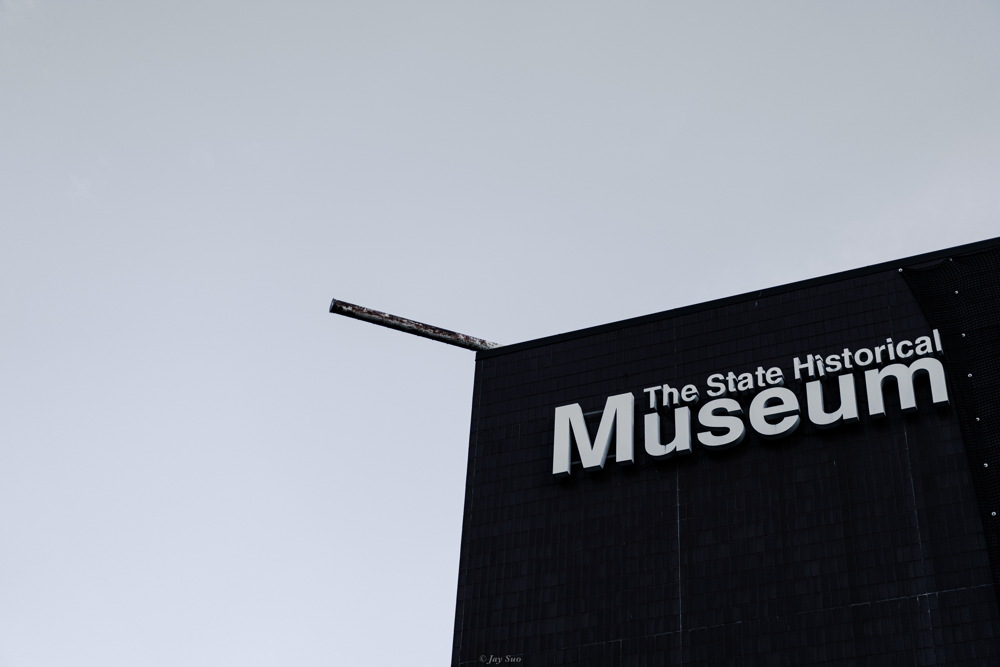
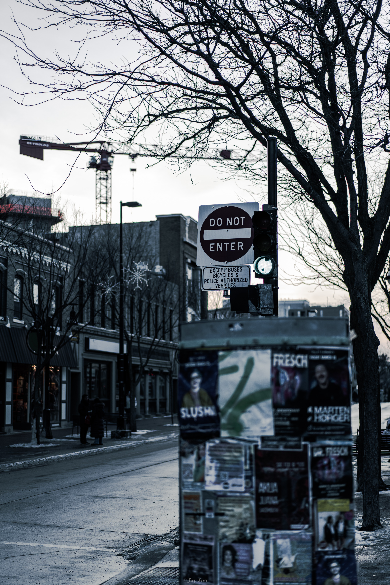
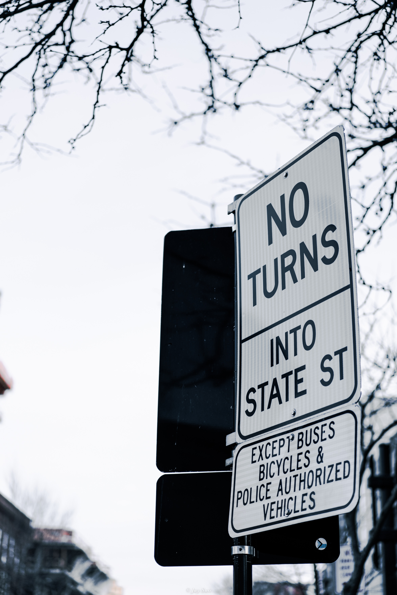
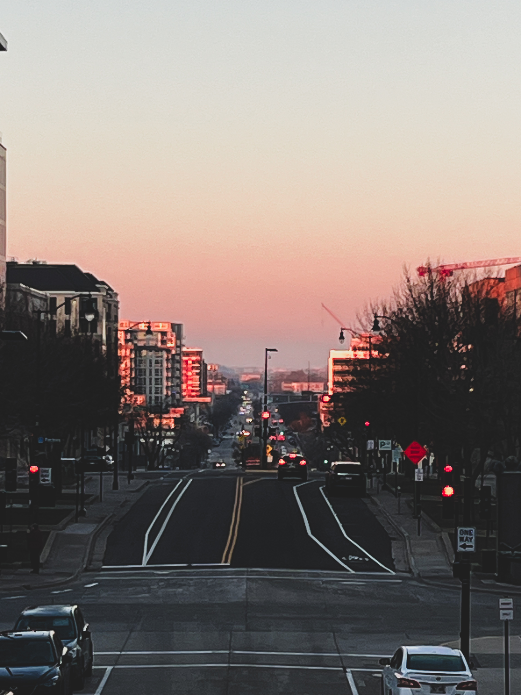

State Street is a vibrant and iconic thoroughfare located in the heart of Madison, Wisconsin. This bustling street stretches from the Capitol Square to the University of Wisconsin-Madison campus, serving as a cultural and commercial bridge between the state's political and educational institutions. Known for its lively atmosphere, State Street is home to an eclectic mix of shops, restaurants, cafes, and entertainment venues, making it a popular destination for both locals and visitors. It always gives surprises.
  
The Memorial Union, located on the campus of the University of Wisconsin-Madison, is one of the university's most iconic and beloved landmarks. Established in the 1920s, it serves as a community center for students, faculty, alumni, and visitors, embodying the spirit of the university's commitment to public service and community engagement.


State Capitol, the most iconic silhouette in our city's skyline, the Wisconsin State Capitol is the tallest building in Madison — and the dome is one of the largest in the world. The 100+-year-old Capitol building is the focal point of the city, right on the isthmus between lakes Mendota and Monona (you can even see both lakes from the outdoor observation deck). Surrounding this architectural wonder is all the incredible food, art, shopping and things to do in downtown Madison.
